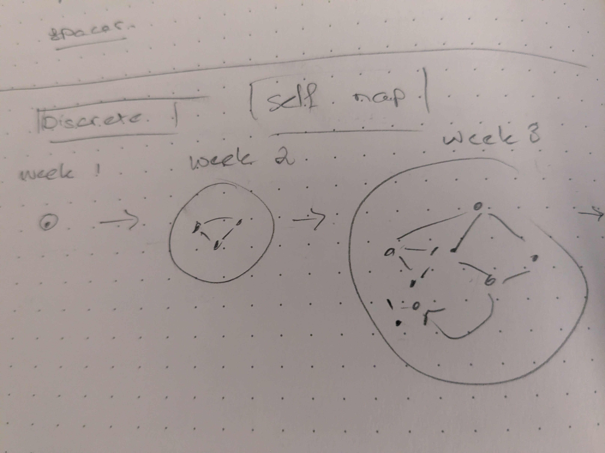

A singularity of button
Dr Charles T. Gray, Datapunk ![]()
Consider
- development plan
- expectation plan
- file-tree metadata
The graph investigated yeseterday’s post laid out the expectation, and I intended this post to be starting to bring in the other data.
But first let us consider the universal properties of these entities:
- digraph
- finite at step \(n\)
- infinitely possible divisions and restructures across all steps
Effectively the system is a blob that grows and grows.

So then I spent today revisiting Banks’ delightful Chaos: A Mathetmatical Introduction (Banks, Dragan, and Jones 2003), then found my coursenotes from Banks’ class, and started working exercises.
This was the bit that really jumped out at me in today’s reading.
We say that \(f : X \to X\) has sensitive dependence on initial conditions or more briefly sensitive dependence, if there is a global constant (called a sensitivity constant) such that for each \(x \in X\), each open set U containing x also contains a point y such that \(d(f ^n(x), f^n(y) \geq \delta\) for some \(n \in \mathbb N\). In 1989, Robert Devaney defined chaos as the conjunction of transitivity, a dense set of periodic points and sensitive dependence. It later turned out that sensitive dependence was redundant in this definition in all cases of interest. Many other definitions of chaos have been proposed.
Theorem 4.10. Let \(f : X \to X\) where X is an infinite metric space. If f is transitive and has a dense set of periodic points, then f has sensitive dependence.
Consider a data engineer on a team, if they are doing lots of platform tasks it could mean they are highly skilled and should be supported. Or perhaps they are underresourced and require support.
I feel like it’s intuitive it’s a topological dynamical system, but will need to revise and check rigorous. For a brief moment it all made sense about 10 years ago.
The question that is really nagging me, however, is this.
What is the minimum number of people and tools such that given there is a small chance of misunderstanding, the scientific claim is chaotically undermined by predictable failures in the categorical conjugacy of human intent and tool output?
My spidey sense is it will be embarassingly small; as in, almost all organisations fail.
As discussed in yesterday’s post, even on a team of one, I feel overwhelmed by computational complexity. But only when development gets far along. At the start, when the plan is simple, it’s just a rush, fun.
I feel like I’m viscerally experiencing sensitive dependence, but will need to continue to read to feel confident in these initial thoughts.
Increasingly, I believe structured intelligence governance is in the intersection of category theory, critical theory (for defining ethical constraints on morphisms), and chaos.